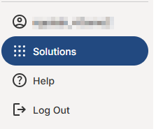

The Solutions Navigator allows users to seamlessly navigate from one Cority solution to another. A user’s accounts must be linked between the solutions to navigate to and from them. When multiple solutions are available to a user, the Solutions option becomes available in the main menu.

Users will only be able to access the applications they have access to. For more information on linking accounts, see Linking an Account.
For example, if a user account in Advanced Calculations (EMS) is linked to a user account in Core (GX2), that user will be able to seamlessly toggle between the two using the solution's navigator.